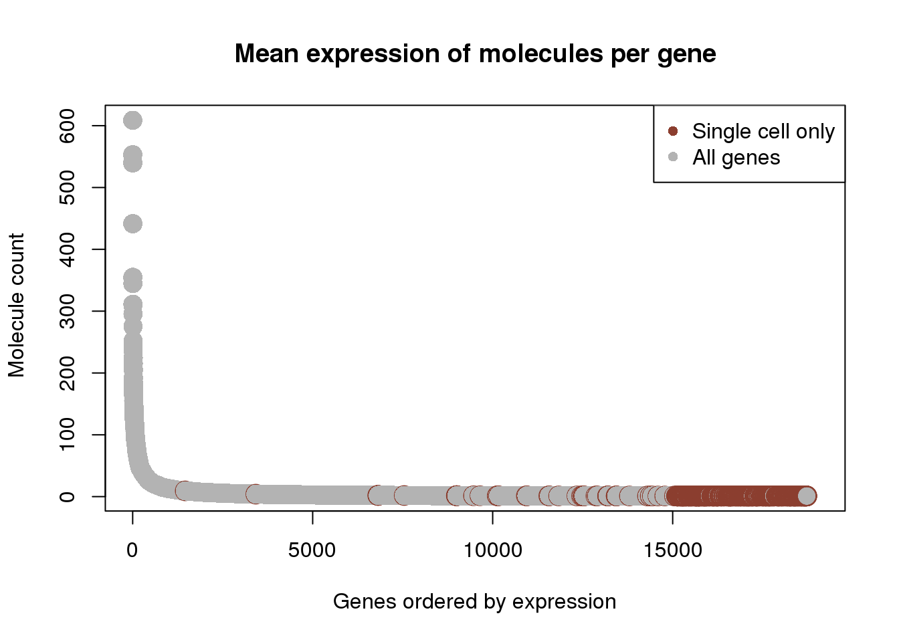
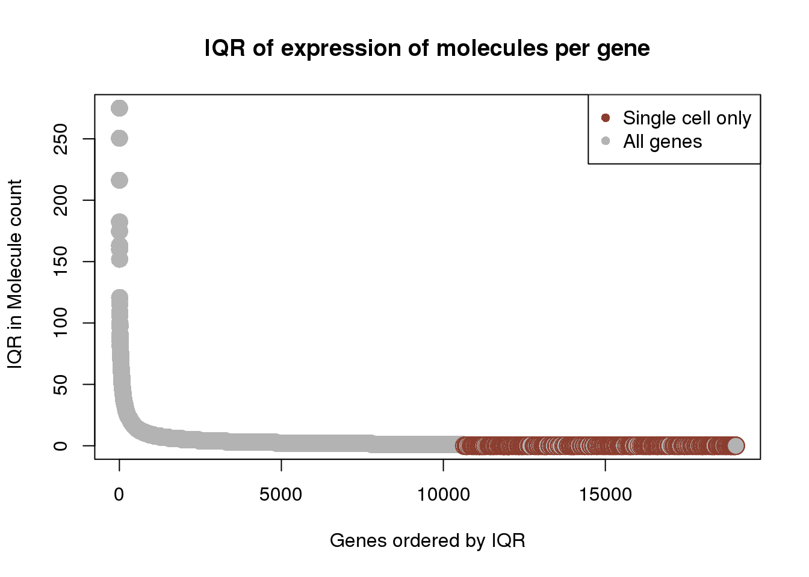
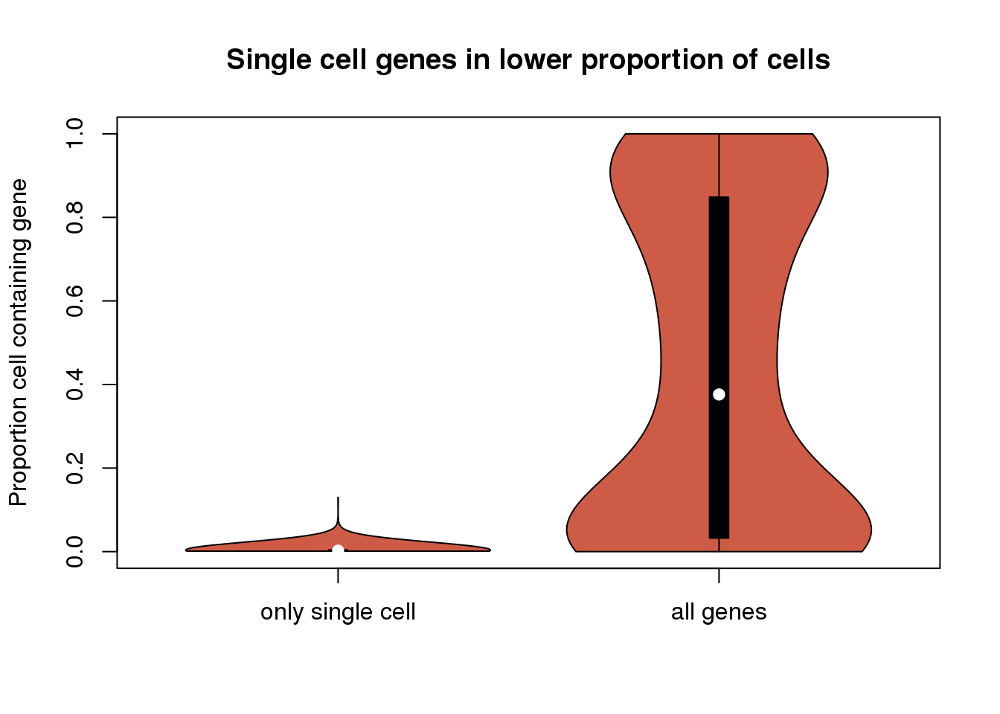
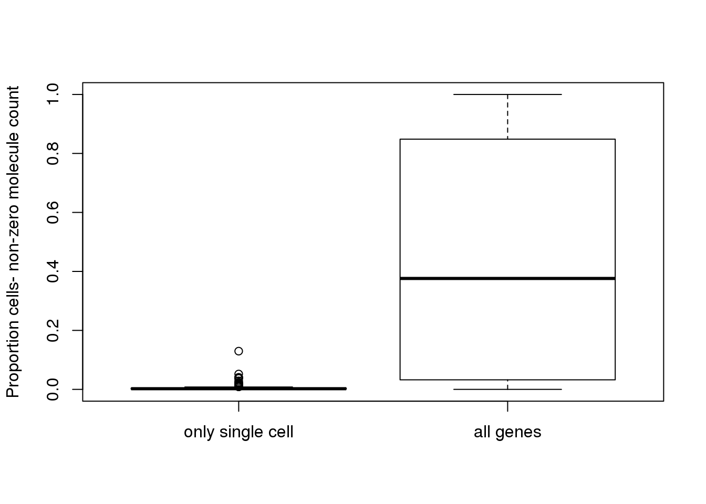

Last updated: 2017-03-03
Code version: 6da6895
This analysis looks into genes that were only detected in either the single cell or bulk sequencing. Contrary to many’s intuitiion there were more genes detected using single cell sequencing than when we pooled cells together. I wanted to explore the expression levels of these genes, variability in expression levels, and the proportion of single cells where these genes were detected. For the bulk specific genes I wanted to see how their expression compares to the expression levels of the genes found in both analysis. Information found here could provide information about bias or provide evidence for the importance of single cell sequencing to detect gene expression.
library("biomaRt")
library("data.table")
library("testit")
library("dplyr")
library("edgeR")
library("VennDiagram")
library("ggplot2")
theme_set(theme_bw(base_size = 12))
source("../../singleCellSeq/analysis/functions.R")anno <- read.table("../../singleCellSeq/data/annotation.txt", header = TRUE,
stringsAsFactors = FALSE)
#input reads (pre-filter)
reads <- read.table("../../singleCellSeq/data/reads.txt", header = TRUE,
stringsAsFactors = FALSE)
#input molecule (pre-filter)
molecules <- read.table("../../singleCellSeq/data/molecules.txt", header = TRUE,
stringsAsFactors = FALSE)
#input bulk reads (pre-filter )
reads_bulk <- read.table("../../singleCellSeq/data/reads-bulk.txt", header = TRUE, stringsAsFactors = FALSE)Create vectors with the list of genes in each set.
genes_observed_reads_bulk <- rownames(reads_bulk)[rowSums(reads_bulk) > 0]
genes_observed_reads <- rownames(reads)[rowSums(reads) > 0]
genes_observed_molecules <- rownames(molecules)[rowSums(molecules) > 0]recreate ven diagram
genes_venn <- venn.diagram(x = list("reads" = genes_observed_reads,
"molecules" = genes_observed_molecules,
"reads bulk" = genes_observed_reads_bulk),
filename = NULL, euler.d = FALSE, scaled = FALSE)
grid.newpage()
grid.draw(genes_venn)single_cell_observed <- union(genes_observed_molecules, genes_observed_molecules)
gene_onlybulk <- setdiff(genes_observed_reads_bulk, single_cell_observed)
gene_onlysinglecell <- setdiff(single_cell_observed,genes_observed_reads_bulk)There are 301 genes only seen in the bulk samples and 971 only seen in the single cells.
Subset molecule count matrix for genes in genes only single cell
molecules_df= data.frame(molecules)
molecules_only_SC <- molecules_df[rownames(molecules_df) %in% gene_onlysinglecell,]Get mean expression for molecule counts.
molecules_mean <- apply(molecules, 1, mean)
molecules_and_mean <- cbind(molecules, molecules_mean)
dim(molecules_and_mean )[1] 19027 865#sort molecules and mean by expression
molecules_and_mean_order <- arrange(molecules_and_mean, desc(molecules_mean))
which_onlySC <- as.numeric(rownames(molecules_and_mean) %in% gene_onlysinglecell) + 1
col_vec_onlySC <- c("lightpink", "blue")[as.numeric(which_onlySC)]
library("scales")
mean_expression <- plot((molecules_and_mean_order$molecules_mean) , pch=46, cex=10, col=col_vec_onlySC, main = "Mean expression of molecules per gene", ylab=" Molecule count", xlab = "genes (blue are only single cell)")#deal with IQR
molecule_IQR <- apply(molecules, 1, IQR)
molecule_w.IQR <- cbind(molecules_and_mean, molecule_IQR)
#sort by IQR
molecules_and_IQR_order <- arrange(molecule_w.IQR, desc(molecule_IQR))
IQR_plot <- plot((molecules_and_IQR_order$molecule_IQR) , pch=46, cex=10, col=col_vec_onlySC, main = "IQR of expression of molecules per gene", ylab=" IQR in Molecule count", xlab = "genes (blue are only single cell)")
#molecules_only_SC has the 971 genes we care about
#create a vector containing number of !0 counts in the table and divide by 864 cell
non_zero_cells <- apply(molecules_only_SC, 1, function(c)sum(c!=0))
molecules_with_nonzero <- cbind(molecules_only_SC, non_zero_cells)
#order by number non zero
molecules_non_zero_order <- arrange(molecules_with_nonzero, desc(non_zero_cells))
plot((molecules_non_zero_order$non_zero_cells)/864, main="Most genes are seen in low proportion of cells", ylab="Proportion cells- non-zero molecule count", xlab="gene index")
This plot is made with the genes we only detected in the single cell analysis. Of these genes, most of them are seen in a low proportion of cells (<2%). This could be a reason the bulk samples could not capture these cells. These cells are unique and could be interesting but only genes that were seen in the union of single cell and bulk were used in the paper. If genes are differncially expressed in a bulk sample we may not have the power to see this when only bulk RNA seq is done.
Flip this analysis around and look at the proportion of cells expressing genes for all genes in the set and highlighting the single cell only genes.
non_zero_cells_all <- apply(molecules, 1, function(c)sum(c!=0))
molecules_with_nonzero_all <- cbind(molecules, non_zero_cells_all)
molecules_non_zero_order_all <- arrange(molecules_with_nonzero_all, desc(non_zero_cells_all))
xy <- data.frame(x= c(1:NROW(molecules_with_nonzero_all)),
y = molecules_with_nonzero_all$non_zero_cells_all/864)
plot(xy, pch=16, cex=1,
col=alpha(col_vec_onlySC, .8), xlab = "Gene index", ylab="Proportion cells- non-zero molecule count" , main= "Genes seen only in sc span distribution")# plot((molecules_non_zero_order_all$non_zero_cells_all)/864, pch=16, cex=1, col=alpha(col_vec_onlySC, .8), xlab = "Gene index", ylab="Proportion cells- non-zero molecule count" , main= "Genes seen only in sc span distribution")
# points(((molecules_non_zero_order_all$non_zero_cells_all)/864)[which(rownames(molecules_non_zero_all) %in% rownames(molecules_with_nonzero))], col = "black", cex = 2)#maybe 2 boxplots with the percentage of the genes in both vs the genes only in single cell?
#seperate molecules_with_nonzero_all to take out the cells that are in the only sc sett
#single cell only
summary(molecules_with_nonzero$non_zero_cells) Min. 1st Qu. Median Mean 3rd Qu. Max.
1.00 1.00 2.00 3.11 3.50 112.00 summary(molecules_with_nonzero_all$non_zero_cells_all) Min. 1st Qu. Median Mean 3rd Qu. Max.
0.0 28.0 325.0 379.3 733.0 864.0 boxplot((molecules_with_nonzero$non_zero_cells)/864, (molecules_with_nonzero_all$non_zero_cells_all)/864, names=c("only single cell", "all genes"), ylab="Proportion cells- non-zero molecule count")table(molecules_with_nonzero$non_zero_cells)
1 2 3 4 5 6 7 8 9 10 11 12 13 14 15 16 18 21
424 197 107 77 45 26 31 9 12 10 5 4 5 4 2 2 2 1
25 32 33 35 45 112
1 1 1 3 1 1 table(molecules_with_nonzero_all$non_zero_cells_all)
0 1 2 3 4 5 6 7 8 9 10 11 12 13 14 15 16 17
301 731 507 329 299 260 228 203 151 156 142 140 103 115 90 104 84 104
18 19 20 21 22 23 24 25 26 27 28 29 30 31 32 33 34 35
86 79 70 74 57 73 59 72 53 52 59 56 49 51 32 46 42 33
36 37 38 39 40 41 42 43 44 45 46 47 48 49 50 51 52 53
40 46 49 22 39 34 42 34 40 43 35 37 19 28 40 32 35 30
54 55 56 57 58 59 60 61 62 63 64 65 66 67 68 69 70 71
32 33 32 22 27 24 37 29 31 26 24 28 30 18 37 26 29 23
72 73 74 75 76 77 78 79 80 81 82 83 84 85 86 87 88 89
23 21 24 23 24 29 25 26 22 26 29 20 28 16 18 15 19 14
90 91 92 93 94 95 96 97 98 99 100 101 102 103 104 105 106 107
21 15 15 24 16 18 20 22 15 22 17 17 13 16 16 22 23 15
108 109 110 111 112 113 114 115 116 117 118 119 120 121 122 123 124 125
12 9 13 21 20 16 14 16 16 10 20 17 21 15 19 18 19 13
126 127 128 129 130 131 132 133 134 135 136 137 138 139 140 141 142 143
20 13 11 18 16 14 15 15 14 15 12 9 19 9 13 12 24 13
144 145 146 147 148 149 150 151 152 153 154 155 156 157 158 159 160 161
14 14 9 11 12 11 21 12 13 13 10 14 14 19 12 19 16 4
162 163 164 165 166 167 168 169 170 171 172 173 174 175 176 177 178 179
10 7 10 11 16 13 9 9 8 15 9 20 14 8 16 8 12 8
180 181 182 183 184 185 186 187 188 189 190 191 192 193 194 195 196 197
20 14 9 17 16 10 11 11 20 13 14 17 17 7 10 12 19 11
198 199 200 201 202 203 204 205 206 207 208 209 210 211 212 213 214 215
12 15 11 14 11 6 12 11 5 17 8 10 6 12 8 12 9 9
216 217 218 219 220 221 222 223 224 225 226 227 228 229 230 231 232 233
9 12 10 9 10 11 13 9 9 13 15 12 12 15 10 4 8 8
234 235 236 237 238 239 240 241 242 243 244 245 246 247 248 249 250 251
7 9 7 13 8 10 10 9 12 9 12 14 10 8 7 11 8 6
252 253 254 255 256 257 258 259 260 261 262 263 264 265 266 267 268 269
16 10 8 8 18 13 13 12 16 8 9 8 7 5 10 11 11 12
270 271 272 273 274 275 276 277 278 279 280 281 282 283 284 285 286 287
16 8 10 16 7 12 8 10 11 14 7 8 10 9 17 12 14 12
288 289 290 291 292 293 294 295 296 297 298 299 300 301 302 303 304 305
12 18 9 4 15 12 8 9 8 9 6 7 15 12 13 7 9 4
306 307 308 309 310 311 312 313 314 315 316 317 318 319 320 321 322 323
12 9 11 11 12 9 8 8 8 11 4 6 7 8 6 13 8 10
324 325 326 327 328 329 330 331 332 333 334 335 336 337 338 339 340 341
10 11 11 9 8 9 12 5 15 6 6 8 5 10 14 7 12 6
342 343 344 345 346 347 348 349 350 351 352 353 354 355 356 357 358 359
16 12 13 8 10 10 14 12 11 14 7 13 7 12 8 10 16 9
360 361 362 363 364 365 366 367 368 369 370 371 372 373 374 375 376 377
10 6 10 10 11 8 7 10 12 4 11 9 7 11 12 8 6 9
378 379 380 381 382 383 384 385 386 387 388 389 390 391 392 393 394 395
12 9 6 10 12 8 5 11 18 9 8 12 10 7 8 8 7 5
396 397 398 399 400 401 402 403 404 405 406 407 408 409 410 411 412 413
9 10 12 12 12 7 9 11 9 11 12 12 10 15 5 8 12 9
414 415 416 417 418 419 420 421 422 423 424 425 426 427 428 429 430 431
11 9 7 9 13 7 11 11 9 11 9 11 10 11 11 14 14 13
432 433 434 435 436 437 438 439 440 441 442 443 444 445 446 447 448 449
13 15 7 13 10 15 11 8 12 13 11 18 6 13 8 14 10 7
450 451 452 453 454 455 456 457 458 459 460 461 462 463 464 465 466 467
7 10 8 11 7 10 12 13 16 6 10 12 3 10 7 14 11 14
468 469 470 471 472 473 474 475 476 477 478 479 480 481 482 483 484 485
13 15 15 5 8 10 12 15 11 2 11 10 7 10 15 8 13 5
486 487 488 489 490 491 492 493 494 495 496 497 498 499 500 501 502 503
11 13 10 11 10 14 6 9 12 6 13 15 15 6 15 14 14 5
504 505 506 507 508 509 510 511 512 513 514 515 516 517 518 519 520 521
10 8 6 6 21 9 10 11 14 6 6 15 9 19 5 12 7 6
522 523 524 525 526 527 528 529 530 531 532 533 534 535 536 537 538 539
13 3 7 14 12 15 11 8 6 6 10 11 13 12 8 15 7 11
540 541 542 543 544 545 546 547 548 549 550 551 552 553 554 555 556 557
9 9 10 15 8 5 21 20 15 10 7 16 15 8 13 13 15 14
558 559 560 561 562 563 564 565 566 567 568 569 570 571 572 573 574 575
14 9 10 8 13 7 13 9 17 12 6 11 11 11 17 10 10 14
576 577 578 579 580 581 582 583 584 585 586 587 588 589 590 591 592 593
5 16 7 12 15 11 8 12 11 9 10 17 14 9 11 11 13 13
594 595 596 597 598 599 600 601 602 603 604 605 606 607 608 609 610 611
10 11 18 19 12 11 7 13 9 13 13 11 9 15 6 11 14 16
612 613 614 615 616 617 618 619 620 621 622 623 624 625 626 627 628 629
15 20 9 7 12 8 14 12 16 13 11 15 16 19 11 13 6 11
630 631 632 633 634 635 636 637 638 639 640 641 642 643 644 645 646 647
14 12 18 16 13 10 9 11 15 15 15 14 14 19 15 12 15 13
648 649 650 651 652 653 654 655 656 657 658 659 660 661 662 663 664 665
8 17 12 15 11 12 11 5 13 14 13 13 16 8 10 10 14 17
666 667 668 669 670 671 672 673 674 675 676 677 678 679 680 681 682 683
21 10 7 14 15 17 11 15 13 12 10 6 20 20 15 15 13 18
684 685 686 687 688 689 690 691 692 693 694 695 696 697 698 699 700 701
14 15 12 15 11 11 15 15 13 13 17 18 16 14 15 17 13 20
702 703 704 705 706 707 708 709 710 711 712 713 714 715 716 717 718 719
17 19 12 6 17 13 20 17 16 10 15 20 15 21 16 15 18 15
720 721 722 723 724 725 726 727 728 729 730 731 732 733 734 735 736 737
19 18 16 20 17 23 13 23 13 17 17 12 17 22 16 21 14 13
738 739 740 741 742 743 744 745 746 747 748 749 750 751 752 753 754 755
17 21 26 14 21 22 17 15 16 15 13 24 34 20 18 19 19 20
756 757 758 759 760 761 762 763 764 765 766 767 768 769 770 771 772 773
21 14 23 22 22 22 18 14 20 13 22 17 20 16 23 21 25 14
774 775 776 777 778 779 780 781 782 783 784 785 786 787 788 789 790 791
20 24 26 24 16 24 25 24 34 16 18 17 24 14 18 15 23 22
792 793 794 795 796 797 798 799 800 801 802 803 804 805 806 807 808 809
28 29 19 24 30 20 16 26 26 29 18 24 23 32 28 24 20 26
810 811 812 813 814 815 816 817 818 819 820 821 822 823 824 825 826 827
18 26 33 22 28 18 14 32 23 28 29 28 25 25 28 32 29 26
828 829 830 831 832 833 834 835 836 837 838 839 840 841 842 843 844 845
26 28 26 40 30 37 40 37 34 36 36 35 54 28 42 57 43 40
846 847 848 849 850 851 852 853 854 855 856 857 858 859 860 861 862 863
58 49 51 47 39 55 53 57 67 63 77 75 91 91 95 144 163 190
864
560 #genes found only once in all data (this is y)
dim(molecules_with_nonzero_all[molecules_with_nonzero_all$non_zero_cells_all==1,])[1][1] 731dim(molecules_with_nonzero_all[molecules_with_nonzero_all$non_zero_cells_all==2,])[1][1] 507###In function need to count the number of these genes that are only found found in single cell
prop_cell_function= function(c){
x= molecules_with_nonzero_all[molecules_with_nonzero_all$non_zero_cells_all==c, ]
y=x[rownames(x) %in% rownames(molecules_only_SC),]
return(dim(y)[1])
}
prop_cell_function(1)[1] 424prop_cell_function(2)[1] 197#do this in sapply for 0-864
prop_cells= c()
for (i in seq(1:864)){
num= prop_cell_function(i)
prop_cells=c(prop_cells, num)
}
plot(prop_cells/971, ylab="proportion of single cell only genes", xlab="number of cells")
# For all genes that are detected in single cell or bulk (19,027 genes), we condition on the
# number of cells (ranging 1 - 864 cells) and given n number of cells, we look at
# the proportion of genes that are detected in single cell only but not in bulkbulk_mean <- apply(reads_bulk, 1, mean)
bulk_and_mean <- cbind(reads_bulk, bulk_mean)
#sort genes and mean by expression
bulk_and_order <- arrange(bulk_and_mean, desc(bulk_mean))
which_onlyBULK <- as.numeric(rownames(bulk_and_mean) %in% gene_onlybulk) + 1
col_vec_onlyBULK <- c("lightpink", "blue")[as.numeric(which_onlyBULK)]
plot((bulk_and_order$bulk_mean) , pch=46, cex=10, col=col_vec_onlyBULK, main = "Mean expression of reads in bulk samples", ylab=" read count", xlab = "genes (blue are only bulk genes)")
This site was created with R Markdown